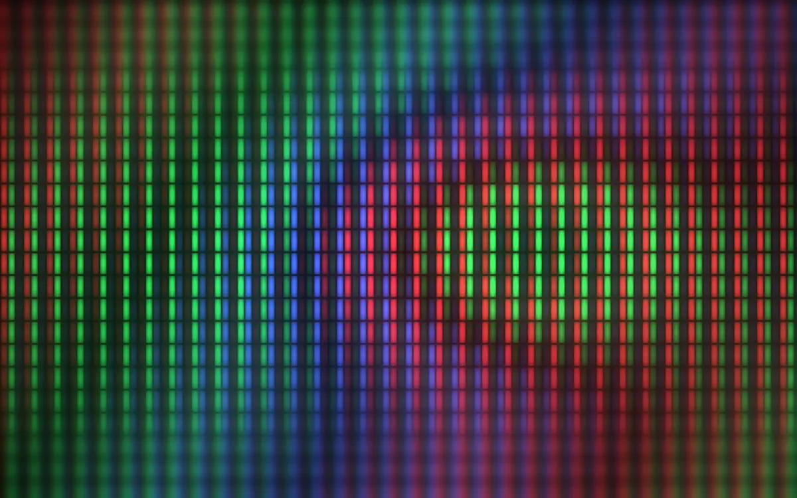
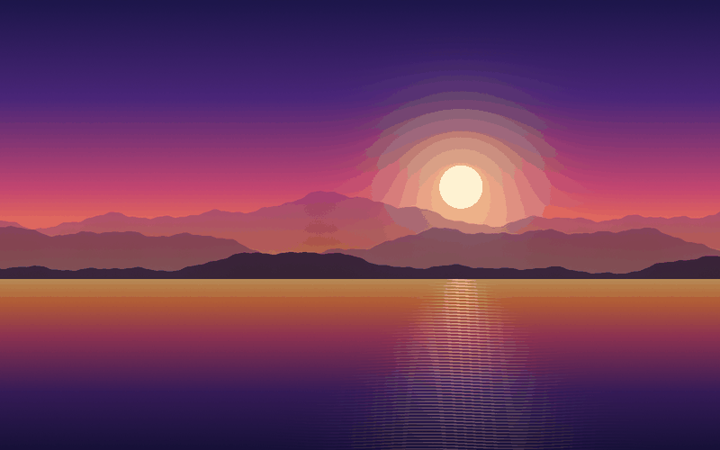
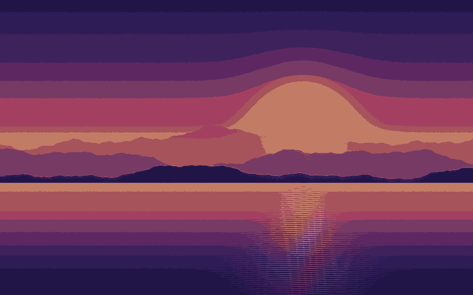

RGB Screens
Additive. Screens add light, so all three channels at full strength make white and all at zero make black.
An interactive manual on digital color
Every photo, icon and web page on your screen is made of pixels, and every pixel is stored as numbers. Kulay is Filipino for color. This page shows how a computer turns color into numbers, how many colors a file can hold, and what happens when an image is squeezed into fewer colors.
Listen: one-minute summary
Welcome to Kulay Lab. Kulay is the Filipino word for color. Every image on your screen is made of pixels, and every pixel is stored as numbers. Each pixel mixes three lights: red, green and blue. Each channel is a number from 0 to 255, which takes 8 bits. Three channels make 24 bits per pixel, enough for about 16.7 million colors. Bit depth is the number of bits per pixel. More bits mean more colors, and bigger files. Quantization replaces each pixel with the nearest color from a small palette. A full-color photo can drop to 256 colors, or even to 8. The file gets smaller, but smooth areas like skies can break into visible steps called banding. Screens use the RGB model, which adds light. Printers use CMYK, which subtracts it. And color pickers use HSL: hue, saturation and lightness. Now open the color mixer and listen to your color.

01
A pixel is the smallest dot a screen can light up. Each one is really three small lights: red, green and blue. By mixing the three at different strengths, a screen can show almost any color.
The computer stores each light's strength as a number from 0 (off) to 255 (full). 256 possible values fit exactly in 8 bits, because 28 = 256.
A hex code is just the three numbers written in base 16, two digits each.
| Channel | Hex | Decimal | Binary (8 bits) |
|---|---|---|---|
| Red | FF | 255 | 11111111 |
| Green | 80 | 128 | 10000000 |
| Blue | 00 | 0 | 00000000 |
Full red, half green, no blue: orange.
02
Move the sliders to set each light from 0 to 255. The swatch, hex code and binary update as you go. Press Hear this color to turn its hue into a musical tone.
Pitch: 275 Hz
The Web Audio API builds a sine-wave oscillator in your browser. The color's hue (0° to 360°) sets its pitch with 220 + (hue ÷ 360) × 660, so red starts at 220 Hz and the scale climbs through orange, green and blue up to 880 Hz. Grays have no hue, so they play the base note.
03
Bit depth is the number of bits used to describe the color of one pixel. Every extra bit doubles the number of possible colors.
Quantization reduces an image to a smaller set of colors called a palette. Each pixel is replaced with the nearest palette color, and the file only stores which palette slot each pixel uses. The file gets smaller, but smooth areas like skies can show visible steps called banding.
24 bits per pixel = 16,777,216 colors


04
A color model is a way to describe a color with numbers. The same color can be written in different models. Each card shows your current mixer color in that model.
Additive. Screens add light, so all three channels at full strength make white and all at zero make black.
Subtractive. Ink absorbs light, so the model works the opposite way. More ink makes a darker color, and K (black) saves colored ink.
Human terms. Hue, saturation and lightness describe color the way people talk about it, which is why color pickers use it.
05
An audit of the media embedded on this page. Original is the uncompressed size: width × height × 3 bytes for images, and the 16-bit PCM WAV master for audio.
| Asset Name & File Format | Original Size → Compressed | Color Depth / Quantization | Compression Algorithm |
|---|---|---|---|
| hero.webpWebP image, 1200 × 750 | 2.70 MB → 59.8 KB98% smaller | 24-bit RGB (8 bits per channel) | Lossy WebP (VP8 prediction + DCT), quality 78 |
| photo-256.pngPNG image, 800 × 500 | 1.20 MB → 61.0 KB95% smaller | 8-bit indexed (256-color palette, median cut, no dithering) | Lossless DEFLATE (LZ77 + Huffman) |
| narration.mp3MP3 audio, 67 s, mono | 5.92 MB → 537 KB91% smaller | 16-bit PCM source, 44.1 kHz | Lossy MP3 (MDCT + Huffman), 64 kbps CBR |
| photo-24bit.pngPNG image, 800 × 500 | 1.20 MB → 283 KB76% smaller | 24-bit truecolor (no palette) | Lossless DEFLATE (LZ77 + Huffman) |
| photo-8.pngPNG image, 800 × 500 | 1.20 MB → 11.0 KB99% smaller | 8-color palette, stored as 4-bit indexed (PNG has no 3-bit mode) | Lossless DEFLATE (LZ77 + Huffman) |
Sizes measured with tools/build_assets.py. 1 KB = 1,000 bytes, 1 MB = 1,000,000 bytes.